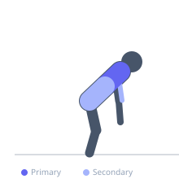
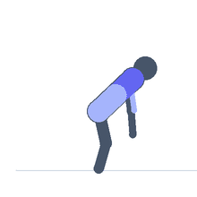

Exercise guide / Inverted Row with Feet on Swiss Ball
Inverted Row with Feet on Swiss Ball
The inverted row with feet elevated on a Swiss ball combines horizontal pulling with continuous lower-body stability demand. The unstable foot surface requires constant hip extension and core engagement to prevent the ball from rolling, increasing total muscle recruitment compared to feet-on-floor versions while also training posterior chain co-activation.
Primary muscles
latissimus dorsi
rhomboid major
Secondary muscles
biceps brachii
erector spinae
Stabilizers
transverse abdominis
Equipment
Smith Machine
Adjustable Bench (Incline / Decline)


Starting position
- Grip a fixed bar with both hands and walk the feet onto a Swiss ball. Extend hips to form a plank, arms extended toward the bar.
Setup
- Ensure the bar is at an appropriate height relative to the ball — experiment to find the right position for the desired difficulty. Use a bar slightly narrower than shoulder width.
Steps
- Step 1: Establish the starting plank position with feet centered on the ball.
- Step 2: Brace core and squeeze glutes to stabilize the ball.
- Step 3: Row the chest to the bar, driving elbows back.
- Step 4: At the top, hold 1 second while maintaining ball control.
- Step 5: Lower under control to starting position.
Coaching cues
- Press your calves into the ball to control it
- Hips stay high — do not let them drop
- Full lockout on every descent
Breathing
- Exhale on the row. Inhale on the descent.
Range of motion
- Full arm extension to chest touching or near bar.
Tempo
- 2-1-3-0
Common mistakes
- Letting the hips drop as fatigue sets in
- Feet sliding on the ball — press the calves firmly into the surface
- Rushing the rep to avoid the balance challenge
Safety
- Ensure the ball is properly inflated and rated for body weight
- Have the bar set low enough that a fall from the ball does not cause injury
Training
- hypertrophy: 8–15 reps
- hypertrophy: 3–4 sets
- Rest: {'hypertrophy': 90}